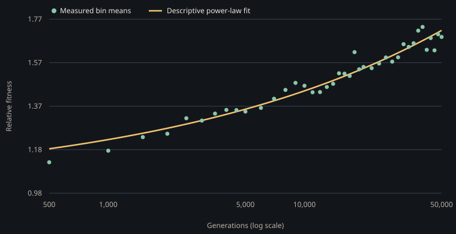

Experiment catalogue
Experiments
Each entry describes the model question, its treatment and control, and the measured outcome. Browser versions are marked as simplified models.
Experimental evolution and microbial ecology
The open ocean has gyres around ridges, drifting upwelling and day-night cycles. Laboratory presets simplify published experimental systems. They test whether selected patterns arise in this model. Interactive browser models let readers explore additional mechanisms.
Range expansion on agar
Two neutral strains spread from a drop. Cells hardly move on agar, so the colony grows at its edge, where few cells found each new patch.
Across five runs, local over global heterozygosity averaged 0.058 on agar and 0.935 in stirred liquid. The paired-arm difference was -0.877 (95% Welch CI -0.929 to -0.825).
MEGA-plate
A long plate with antibiotic in bands rising toward the middle, inoculated at both ends, under bright-field.
Baym et al. (2016), Spatiotemporal microbial evolution on antibiotic landscapes. Science 353: 1147.
Across five runs, mean model resistance was 0.387 with antibiotic and 0.003 without. The difference was 0.384 (95% Welch CI 0.368 to 0.399). Resistance is a dimensionless model score. The experiment did not measure antibiotic concentration.

Predator and prey, with a refuge
A raptorial predator and its prey in a small dish, in dark-field. In one version, sediment at the left edge hides prey.
Gause (1934), The Struggle for Existence.
Across five runs, final prey counts averaged 44 without a refuge and 2,224 with one. The difference was -2,180 (95% Welch CI -2,405 to -1,955). The predator count difference was -119 (95% Welch CI -887 to 648).

Phototaxis on a slide
A slide lit from one end, on poor medium. Cells can sense the light gradient along their heading.
Mean position was 158.5 with a gradient, 128.3 under even light, and 160.3 with the light sense blinded. The gradient and blinded arms differed by -1.8 (95% Welch CI -19.4 to 15.8), consistent with growth across the light field rather than steering.

Open ocean
A 2D incompressible flow drives food and drifters around ridges and through passes; current strength cycles and the upwelling moves, so what a body needs keeps changing.
Predators appear within 2,000 ticks and settle between 2 and 16 percent of the population.

Petri dish and transfer bottlenecks
The exploratory preset retains one tenth of the population every 600 model ticks. The LTEE transfer proxy retains one percent and resets abstract food. It does not model the dilution volume, DM25 medium or daily growth curve.
The LTEE uses a 1:100 daily dilution in DM25, as described in this protocol review. This preset currently represents the bottleneck only.
LTEE fitness data
The dataset contains competition measurements from E. coli populations against an oppositely marked ancestor. The analysis averages available replicates by generation and fits a descriptive power law to bins with at least four measurements.

The curve summarizes the measured LTEE trajectory. Life World rates remain uncalibrated to these measurements.
Download source data · Download binned means · Read the method and source citation
The Life World transfer preset represents a random 1% bottleneck and food reset. It does not simulate the daily growth cycle. Its growth rates, tick duration, morphology and fitness are not calibrated to E. coli.
Latest replicated run set
Five experiment families were rerun with five replicates per arm and matched seed values within each experiment. The run series, simulator summaries, means and treatment-control contrasts are downloadable.
Run details and commands · Arm means and 95% intervals · Treatment-control differences
| Model experiment | Outcome | Treatment minus control | 95% Welch interval |
|---|---|---|---|
| Range expansion | Local over global heterozygosity | -0.877 | -0.929 to -0.825 |
| MEGA-plate | Mean resistance | 0.384 | 0.368 to 0.399 |
| Predator and prey | Final prey count, no refuge minus refuge | -2,180 | -2,405 to -1,955 |
| Phototaxis | Mean position, gradient minus even light | 30.2 | 15.3 to 45.0 |
| Phototaxis control | Mean position, gradient minus blinded | -1.8 | -19.4 to 15.8 |
| Evolved networks | Mean neurons, active minus inert | -1.09 | -3.02 to 0.85 |
These are simulated outcomes. The cited studies provide empirical context for qualitative patterns. The parameter values and time scales have not been calibrated against those studies.